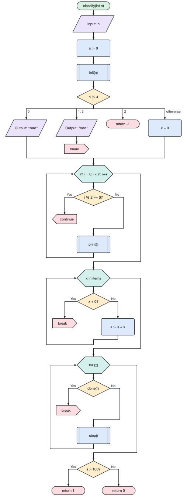

Multiple choice (switch) — a diamond with an expression and several branches. The values of each branch are written above it (several values separated by commas); the last branch, "otherwise", runs when no value matches.
C-style for loop — a hexagon "initialization; condition; step", e.g. int i = 0; i < n; i++. Any part may be empty.
For-each loop — the body runs for every element of a collection: x in items.
Subroutine call (predefined process) — a rectangle with double side lines.
Return ends the algorithm (optionally with a value). Break leaves the nearest loop or multiple choice, continue goes to the next iteration of the loop. The flow line ends after these blocks.
Double-click the start terminator to set the name, parameters and return type of the algorithm; code generators use them.
Blocks can be dragged with the mouse (Ctrl/Alt copies); Esc cancels insertion.
